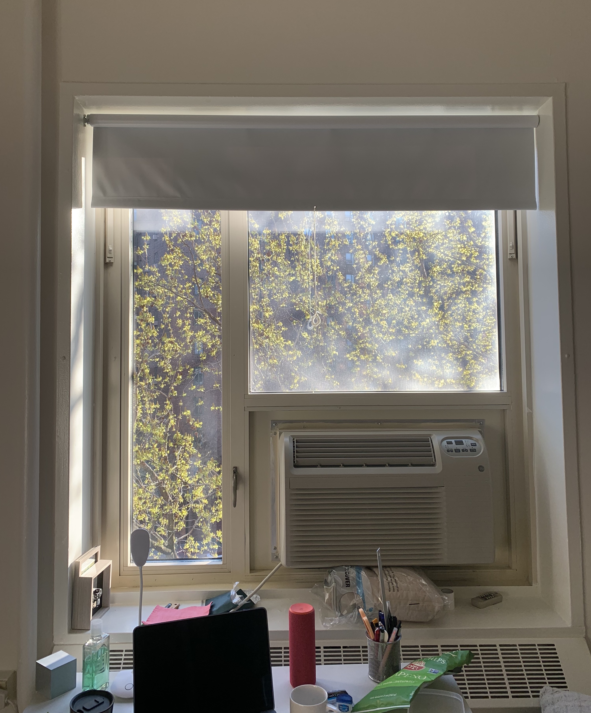
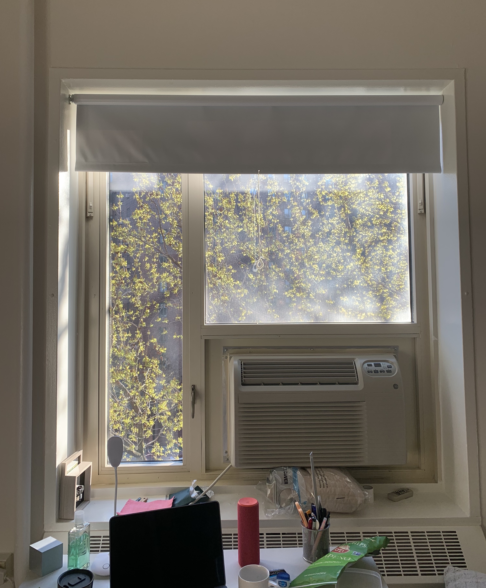

I started watching a show called The 100 a few days ago, and I’m already on the second season.( I’m the kind of person who started a show and couldn’t stop until I finish it. I hope I can manage my time well as I binge-watching.)
I think it’s fitting to watch this show during quarantine since it is set in the future where the nuclear war has made the earth unsurvivable and people live in the space station called the Ark. I can’t help but relate what happens in the show to our world right now. We all talk about when things get back to normal, we could do this and do that.
What if the situation we are in right now is the new normal. Humans are so vulnerable compared to the earth and the universe. We can’t prevent catastrophic events. Not to mention human has been a big factor in causing these events. It is time for us to make a change. We have made actions, but it’s not enough.